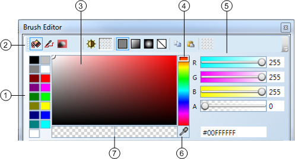
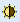
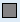
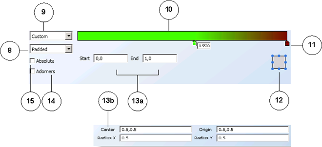

Brush Editor View
The Brush Editor view allows you to modify your graphical elements with brush options such as color, gradient, and light angles. The top portion of the Brush Editor view enables you to make your brush and color selections. When you choose either the Linear or Radial brush options, additional settings choices are enabled at the bottom of the Brush Editor view.
General Settings – Brush Editor View

Brush Editor Top | |
| Description |
1 | Base Color Palette Display the sixteen base colors for graphics you can choose from. |
2 | Brush Bar Select from the available brush types and tools available for working with the selected elements, canvas, and work area. Also allows the user to select linear and radial gradient fill options, copy and paste features, and revert to the last brush.
Set the color apply to the Fill (interior) property of the selected elements.
Set the color that is applied to the Stroke property or the font color of the selected elements.
Set the color that is applied to the Background property of the selected element on the canvas. Miscellaneous Color Brush Indicate a brush, other than the ones available from the Brush bar, is currently active on the element. For example, when setting the shadow color of a property, etc. NOTE: The Miscellaneous Color Brush icon only displays on the Brush Editor when it is active, otherwise, it does not display on the Setting bar.  Toggle Blinking BrushSplit the Main Brush into two panes. When the Toggle Blinking brush is selected, the Main Brush is split in two, and two colors can be applied to the brush; one in each pane of the now split Main Brush. In Test or Runtime mode the element will toggle between the two state colors applied. NOTE: Do not confuse this with the Blinking property check box of the Layout group in the Properties view, which, when enabled allows the associated element to blink (toggle between visible and non-visible) on the graphic canvas. Main Brush The main brush reflects the current colors and brush settings applied to the selected elements on the canvas.
When the Toggle Blinking Brush is selected, the Main Brush icon splits into two panes and displays the main brush color and then the blink brush color.  Solid Color BrushApply a single solid color without any blending, etc.
Blend colors along a straight path.
Blend colors while radiating or branching out in all directions from a common, specified center.
Remove any brushes applied to the element when selected. NOTE: Shapes without a fill brush are not selectable and do not show tooltips within the shape.
Copy any brush applications from the selected element to the clipboard.
Paste any brush applications from an element currently saved to the Copy Brush clipboard. Revert Back Re-apply the previous brush applications to the Main brush and the selected element. |
3 | Hue, Saturation, and Value (HSV) Palette Move the mouse over a spectrum of color, ranging in saturation. When the mouse is moved, the current hue is also reflected on the RGBA sliders, the Main brush, and the selected element on the canvas. The hexadecimal value is also updated. |
4 | Hue Slider Move the slider up and down the hue color spectrum to select a color. When the Hue slider is moved, the current hue is also reflected on the RGBA sliders, The HSV palette, the Main brush, and the selected element on the canvas. The hexadecimal value is also updated. |
5 | RGBA Sliders Adjust the opacity of your graphical elements and select custom colors from the RGBA Hue slider controls, or by entering a hexadecimal color code, or by entering the name of a color from the HTML Literal Word Colors Table. The sliders have dynamically changing backgrounds showing the current color selection as they change. |
6 | Color Eyedropper Move your cursor over a color and brush content and copy it to the selected element. As the eyedropper is moved around, the current color or brush hovered over is previewed on the current element and the Brush Editor view color tools are updated as well. |
7 | Current Color and Initial Color Initial Color Displays the current color on the left, and the initial (previous) color selected. |
 Fill Brush
Fill Brush Stroke Brush
Stroke Brush Background Brush
Background Brush Main Brush and Blink Brush
Main Brush and Blink Brush Linear Gradient Brush
Linear Gradient Brush Radial Gradient: Brush
Radial Gradient: Brush No Brush
No Brush Copy Brush
Copy Brush Paste Brush
Paste Brush
Gradient Option Settings – Brush Editor View

Brush Editor View – Gradient Options | |
8 | Spread Mode Options Select Padded, Reflect, or Repeat for a variety of visual gradient effects. |
9 | Gradient Options Select from common predefined gradient definitions or you can select the Custom option, and use the gradient stops. |
10 | Gradient Slide Bar Set the definition for linear and radial gradients using the gradient stops. |
11 | Gradient Stops Set the colors in the gradient by clicking on the gradient slide bar and selecting a color from the palette for the stop. |
12 | Angle Control Selector Select the angle of light for a linear and radial gradient. |
13a | Linear Gradient Control Enter explicit values to define the linear gradient Start and End positions. |
13b | Radial Gradient Control Enter explicit values to define the radial gradient Center, Origin, Radius X, and Radius Y positions. NOTE: To prevent any unexpected differences in the Flex client, it is recommended you use the same value for radius X and Y when configuring your graphics. For more information, see Brush View and Brushes Group. |
14 | Adorners Option Apply and control visual effects using gradient spread and vector position. |
15 | Absolute Option Define a coordinate system that is not relative to a bounding box. The values you enter are interpreted directly in the local space. NOTE: Select this option when you apply gradients to a Text element that will display in the Flex client. |
Related Topics
For background information, see Brush View and Brushes Group.
For related procedures, see the following: